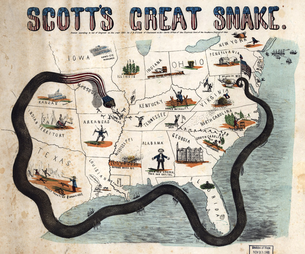

В прошлом выпуске США в очередной раз попрыгали по граблям, имя которым «воля партии» и «шапкозакидательство», а дикси остались стеречь свою границу и ждать, когда взбалмошные соседи снова набегут, желая странного.

Тем временем на море все было далеко не так приятно для южан, как бы им того хотелось — строго наоборот. На момент, когда штаты окончательно друг с другом расплевались, практически весь флот и морские базы находились под контролем северян, и отдавать обратно они их ну совсем не собирались. В Пенсаколе и Норфолке у конфедератов получилось отжать верфи (правда, северные злыдни все равно пожгли все, что не смогли унести, так что полезного там осталось немного), но численностью ВМС США значительно превосходили флот Юга.
Начались дни блокады. Она выполнялась во многом согласно предложенному еще в самом начале войны плану с пафосной кличкой «Анаконда» (журналисты постарались). Предложивший его генерал Скотт (на тот момент главнокомандующий армией уже 20 лет) хорошо понимал, что как бы там ни орали политики и прочие популисты, быстро КША не разгромить, поэтому лучше все-таки думать головой и разрабатывать долговременную стратегию, а не гнать орды необученного мяса на южные штыки.
План действительно был разумен и предусматривал сперва блокаду Юга со стороны океана (горячий привет торговле с Европой!), а затем выход на Миссисипи, главную транспортную артерию всех КША, и постепенное удушение мятежников. Предложив данную разработку на суд общественности, Скотт не учел одного — шизофренического накала упоротости, которая на тот момент царила в северных головах, высокопоставленных и не очень.
Генералу немедленно обозначили, что все сомнения в полном и абсолютном успехе, которого армия США добьется в самые краткие сроки под мудрым руководством Республиканской Партии, — вещь глубочайше недопустимая, особенно у офицера такого уровня, и возникают серьезные подозрения насчет его морального облика строителя капитализма. Скотт послушал это дело, попробовал было что-то пояснить политиканам, а потом плюнул и подал в отставку. На его место назначили уже знакомого нам Макклеллана.
Тем не менее, вариант с блокадой было решено использовать — чего плану-то пропадать? В краткое время весь Юг был отрезан от морского грузопотока, что вызвало в Ричмонде крайнюю озабоченность. При почти полном отсутствии своей промышленности, закупать всякое КША могли только в Европе, а теперь объемы поставок радикально сократились, да и пополнений в бюджет от продажи хлопка можно тоже не ждать.
Как-то ситуацию выправляли специально обученные контрабандисты на особо быстрых кораблях, но те быстро смекнули, что куда выгодней не гонять туда-сюда с орудиями и хлопком на благо страны, а переть из Европы дефицитное для южных богачей и задирать цены втридорога. Как говорится, война войной, а обед по расписанию — кушать хочется всегда. Тем более, большая часть из них вообще была родом из Британии и финансировалась частными инвесторами оттуда — уж очень прибыльное дело эта блокада, если с другой стороны посмотреть.
Но на государственном уровне она вредила не только КША, но Англии с Францией — как-никак, с Юга шло целое море важного и ценного для их промышленности сырья. Плюс США, устроив грандиозную морскую охоту за судами дикси, в какой-то момент поступили не очень хорошо. Вызнав, что на пароходе «Трент» в Лондон отбывают два дипломата от дикси с явной целью замыслить вместе с Британией нечто нехорошее, флот северян пароходец догнал, применив оружие, остановил и парламентеров умыкнул, чтоб не шастали где попало.
Поступок, хоть на первый взгляд и не являющийся особо значимым (ну подумаешь, двух мужиков, даже не поданных Великобритании, развернули и взяли под стражу), едва не привел к очень серьезным последствиям. Потому что не далее как за 50 лет до этого дерзкие и резкие США объявили войну Британии в том числе из-за очень схожей причины — арест судна с дипломатами.
Воевали, между прочим, аж два года (и еще больше полугода пытались помириться — тяжело в то время со связью было, письма шли долго), положили тысячи народу, сожгли Капитолий и Белый дом, но в итоге остались при своих — никто ничего не выиграл и не проиграл. Кроме английских союзников, сборища индейских племен под названием Текумсе, которое в процессе накушалось от американцев всякого и не выдержало тягот войны.
Потом США, как обычно, сообщили о своей полной и безоговорочной победе, долго праздновали и даже гимн себе взяли в честь одной из битв (и он до сих пор такой остался).
В общем, зарубались действительно серьезно, но вроде все решили. И тут опять.
Кабинет министров Британии ревел в ярости и предлагал, как минимум, порвать все отношения с янки, а как максимум — самих янки. Министр иностранных дел призывал вернуться и дожечь то, что зачем-то оставили в прошлый раз — заодно и с войной их этой разобраться. Посол США в Лондоне судорожно шептал себе под нос известное высказывание Лаврова и писал на родину полупанические депеши: мол, судя по, президентская программа уважаемого Авраама состояла всего из двух слов — «Больше ада!», и он таки может его поздравить — удалось.
Спасли США две вещи: героический «прыжок на амбразуру» посла и присутствие хоть какого-то интеллекта в Вашингтоне. Американский дипломат на свой страх и риск кинулся убеждать премьер-министра, что янки ошиблись, исправятся и никакой войны не надо — а тот ее как раз и не хотел ввиду кучи других проблем у Великобритании на тот момент. Проявив чудеса хитроумия и расчетливости, премьер смог сгладить накал страстей, и в американскую столицу ушел не жуткий ультиматум, а все же довольно мягкое послание, в котором англичане недоуменно спрашивали, что это вообще было.
Сперва особо горячие головы в американском кабинете министров никого освобождать не хотели — ну а чо, 50 лет назад выиграли, выиграем и сейчас! — но Авраам все же воспринимал ситуацию с несколько большим участием серого вещества в процессе. К тому же во время обсуждения дошло письмецо из Франции, от Наполеона III, подуськанного английским премьером, в котором тот гарантировал янки в случае невыполнения требований настолько полного песца, что всем неграм шубы сшить хватит. Воевать аж с тремя странами сразу не хотелось даже клиническим «ястребам», поэтому пленных вынужденно, но вежливо отпустили, извинились и выдохнули.
Так Англия и Франция не вмешались в гражданскую войну — а ведь история могла пойти совсем иначе! — предпочтя вместо этого начать физически выжимать долги из Мексики в доле с Испанией.
Тем временем южане, поняв, что волшебник в голубом вертолете в лице двух крупнейших мировых держав как-то задерживается, решили справляться с блокадой собственноручно. Хорошо осознавая, что пытаться построить столько же кораблей, сколько и умеющие в промышленность янки, им не удастся, дикси зашли с неожиданной стороны и решили клепать броненосцы. Идея по тем временам весьма новая, особенно для аграрных КША.
Однако случилась загвоздка. На веслах многотонное чудовище никуда не уплывет, на парусах тоже — нужен пар, то есть, паровая машина приемлемой мощности. Сделать такую с нуля на Юге мог только один завод и корпел бы он над задачей больше года. К счастью, удалось поднять движок с одного из затонувших кораблей северян, после чего во вновь отстроенной верфи Норфолка началось твориться жуткое и невиданное колдунство.
На севере не дремали. Разведка донесла — дикси в своем «гараже» клепают что-то настолько несусветное, что о всякой блокаде можно будет вскоре забыть. Хоть ВМС США все эти новомодные штучки с броней не очень-то нравились, слухи о южном оружии возмездия как-то напрягали.
Поэтому когда один предприимчивый шведский инженер предложил Линкольну забабахать свой броненосец, только, естественно, в сто раз круче и в два раза быстрее, Авраам никак не мог отказаться.
А о том, как встретились два одиночества, вы узнаете в следующем выпуске.